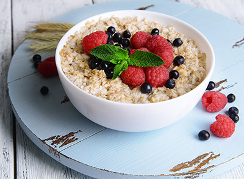

Содержание статьи
1. Главная страница
2. Преимущества ПП
3. Принципы в рамках ПП
4. ПП: меню на неделю
5. Варианты завтраков, обедов и ужинов
6. Советы напоследок
7. Невозможно НЕ похудеть
8. Вредные продукты
9. Полезные советы
|
Полезные советы
Полезные рецепты правильного питания на завтрак
Знакомая с детства поговорка «Завтрак съешь сам, обед раздели с другом, а ужин отдай врагу» имеет под собой вполне логичное и
грамотное медицинское обоснование. Пища, которую диетологи рекомендуют употреблять с утра, должна быть лёгкой и в то же время питательной, чтобы пробудить метаболизм от ночного сна, подбодрить организм
ударной дозой витаминов и привнести щедрую порцию энергетических ресурсов, необходимых для реализации дальнейших планов на день.
Классическая овсяная каша с ягодами и сухофруктами

Вам понадобится:
½ стакана овсяных хлопьев;
1 стакан воды;
сухофрукты (изюм, курага, сушёные бананы или чернослив) по вкусу;
ягоды (смородина, клюква, клубника или виноград).
Как сварить вкусную овсяную кашу?
- Промойте овсяные хлопья, залейте их проточной водой и варите на среднем огне примерно 5-7 минут, снимая сверху образовавшуюся слизь.
- Уменьшите огонь, добавьте порубленные сухофрукты и оставьте кашу томиться ещё 5 минут.
- Снимите кастрюлю с плиты, посыпьте ягодами и перемешайте.
Вкусный и сытный завтрак готов. Можете добавить немного йогурта или подсластить мёдом – от этого овсяная каша станет только полезнее!
Сладкая тыквенно-рисовая каша
Для приготовления правильного утреннего блюда необходимо:
200 г риса;
½ литра воды;
500-600 г тыквы;
1 стручок ванили;
мёд по вкусу.
Этапы приготовления вкусной рисовой каши:
- Очистите тыкву средних размеров от твёрдой кожуры и нарежьте небольшими полосками или кубиками.
- Подсластите тыкву мёдом, добавьте рис и залейте проточной водой.
- Разрежьте стручок ванили продольно, положите в кастрюльку и отправьте кашу томиться на 20-30 минут на медленном огне (до полного приготовления).
После того, как тыквенно-рисовая каша приготовлена, оставьте её на 15-20 минут, чтобы она «дошла». После этого смело приглашайте родных на завтрак – можете не сомневаться, долго уговаривать их не придётся!
|